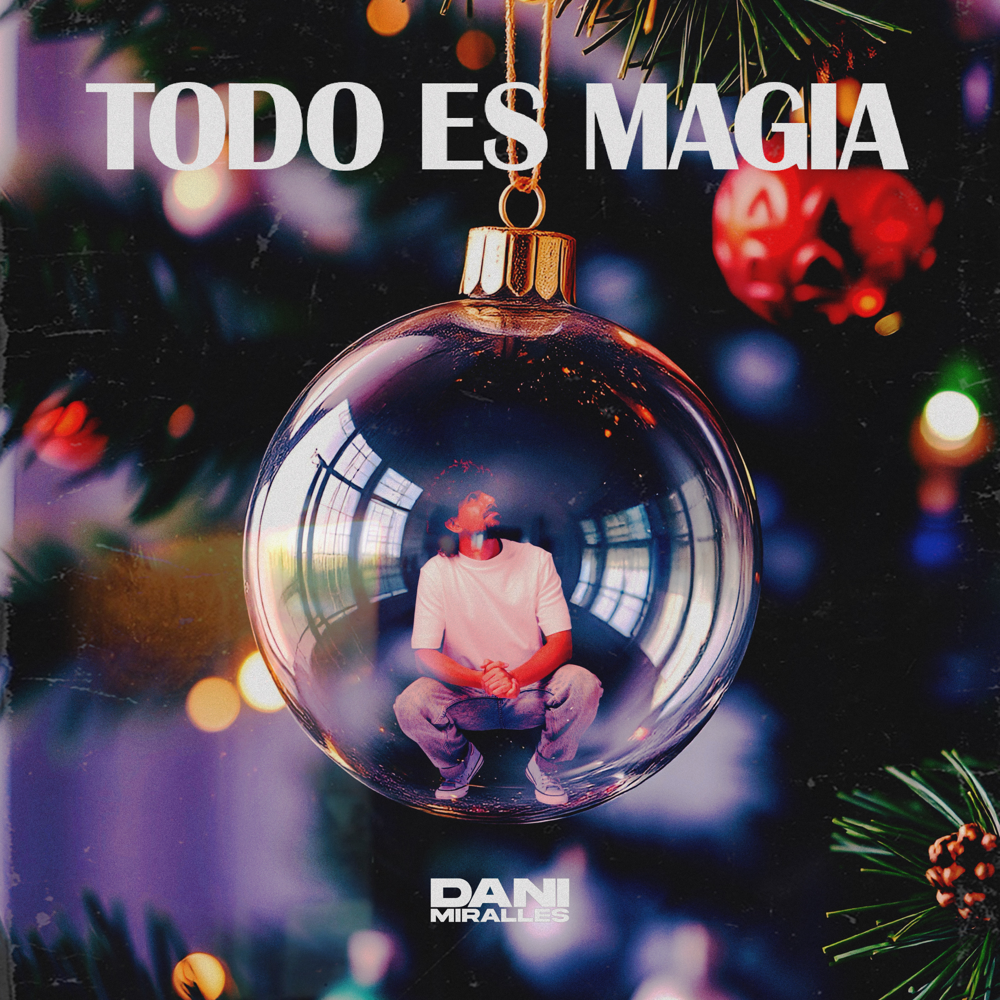

Todo es magia
5 Diciembre 2025Gracias a esta canción he vuelto a vivir las Navidades con la misma ilusión con la que las vivía cuando era pequeño. TODO ES MAGIA es mi primer villancico, y ha sido una experiencia maravillosa grabarla y compartirla con el Coro Josefinas, las voces del colegio Sagrada Familia de Alicante.